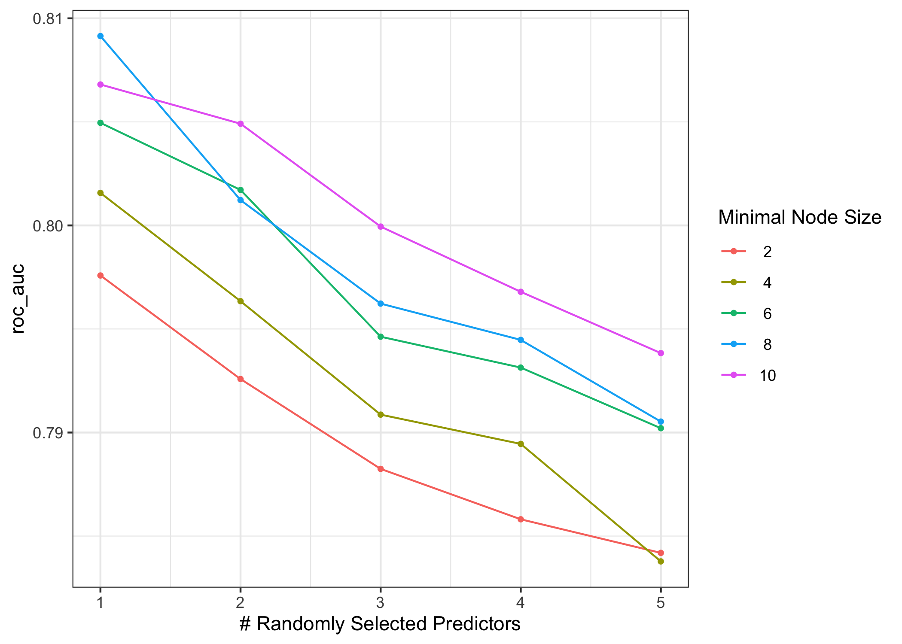
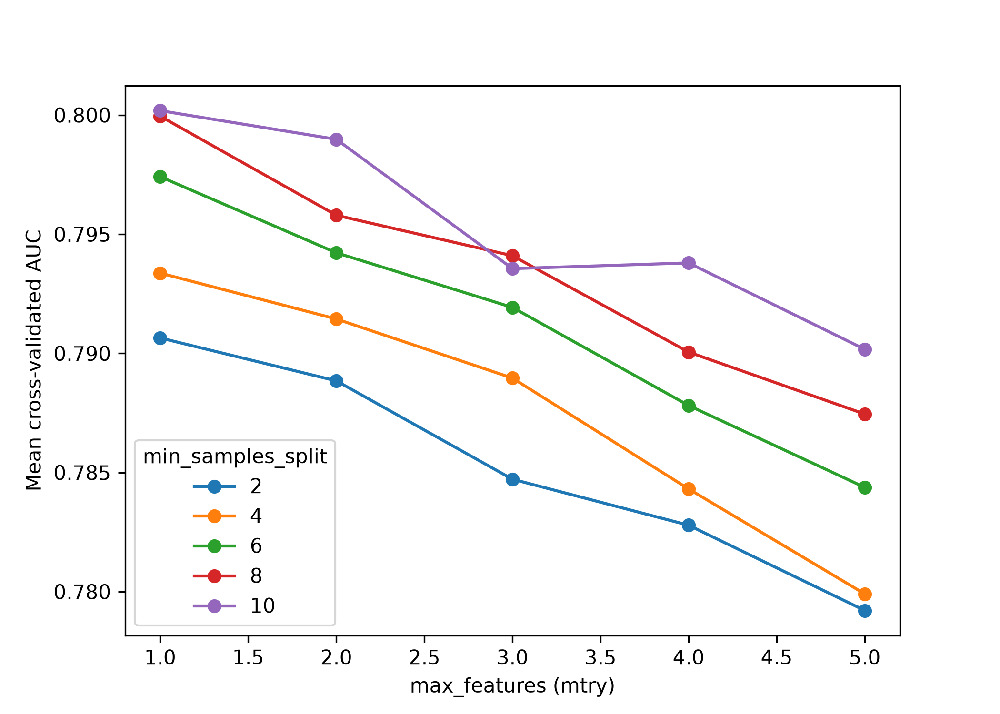

# Packages for this exercise. If one is missing, remove the # and run this line once:
# install.packages(c("tidyverse", "tidymodels", "ranger"))
library(tidyverse)
library(tidymodels)
theme_set(theme_bw()) # white background for every plot
options(pillar.sigfig = 3) # show three significant figures in tablesExercise 5.4 — Random forests
A single decision tree is easy to read but unstable. A few different people in the training rows can give a very different tree. A random forest grows many trees and lets them vote. Two things make the trees differ from each other:
- each tree is grown on a bootstrap sample of the training rows: as many rows as the training set, drawn at random with replacement;
- at each split, each tree may only try a random subset of the predictors.
The forest’s prediction is the average of the trees’ votes. The errors of the single trees partly cancel out.
Goal. In this exercise you will:
- tune a random forest with a grid search and 5-fold cross-validation, as you did for the tree in Exercise 5.3;
- fit the final forest and evaluate it once on the test rows;
- compare it with your tuned tree.
Download the R notebook with the solutions (.Rmd): the same notebook with the worked answers filled in.
Packages and data
The same 750 people and five predictors as Exercise 5.3, from data/diabetes_clean.csv. The outcome has the levels neg then pos.
diabetes <- read_csv("data/diabetes_clean.csv") |>
select(pregnant, glucose, mass, pedigree, age, diabetes) |>
mutate(diabetes = factor(diabetes, levels = c("neg", "pos")))The same split as before: 600 people for training and 150 for testing.
set.seed(42)
split <- initial_split(diabetes, prop = 0.8)
train <- training(split)
test <- testing(split)Part 1 — From one tree to a forest
rand_forest() with the ranger engine. The number of trees is fixed at 500. Two hyperparameters are marked with tune():
mtry: how many predictors each split may choose from (1 to 5 here);min_n: the smallest node that may still be split, as for the tree.
As for the tree in Exercise 5.3, only the model line changes. The formula diabetes ~ . is given when we tune and when we fit.
rf_spec <- rand_forest(mtry = tune(), min_n = tune(), trees = 500) |>
set_engine("ranger") |>
set_mode("classification")
ImportantLearning points
- A random forest is many trees, each grown on a bootstrap sample of the rows and trying a random subset of predictors at each split. Their votes are averaged.
- A small
mtrymakes the trees more different from each other.
TipWhere to find a model’s hyperparameters
The help page for each model and engine lists its hyperparameters. For this forest see random forests with ranger (or ?rand_forest); for any other model, use the tidymodels model search.
Part 2 — Tuning mtry and min_n
Five values of each, 25 combinations. Each one is judged by 5-fold cross-validation on the training rows, as in Exercise 5.3. That is 125 forests, which takes a few seconds.
rf_grid <- grid_regular(mtry(range = c(1L, 5L)),
min_n(range = c(2L, 10L)),
levels = 5)
set.seed(123)
folds <- vfold_cv(train, v = 5, strata = diabetes)
rf_res <- tune_grid(
rf_spec,
diabetes ~ .,
resamples = folds,
grid = rf_grid,
metrics = metric_set(roc_auc),
control = control_grid(event_level = "second")
)
autoplot(rf_res)
Now show the five best combinations by AUC:
# Replace every ______ below, then run this cell.
show_best(rf_res, metric = ______, n = 5)
TipStuck?
The metric is the one given to metric_set() above, written in quotes.
NoteWorked answer
show_best(rf_res, metric = "roc_auc", n = 5)#> # A tibble: 5 × 8
#> mtry min_n .metric .estimator mean n std_err .config
#> <int> <int> <chr> <chr> <dbl> <int> <dbl> <chr>
#> 1 1 8 roc_auc binary 0.809 5 0.0140 pre0_mod04_post0
#> 2 1 10 roc_auc binary 0.807 5 0.0146 pre0_mod05_post0
#> 3 1 6 roc_auc binary 0.805 5 0.0150 pre0_mod03_post0
#> 4 2 10 roc_auc binary 0.805 5 0.0168 pre0_mod10_post0
#> 5 2 6 roc_auc binary 0.802 5 0.0175 pre0_mod08_post0mtry 1 with min_n 8 has the best cross-validated AUC, 0.809. Next come 1 with 10 (0.807), 1 with 6 (0.805), 2 with 10 (0.805) and 2 with 6 (0.802). The standard errors are about 0.015, so these five cannot really be told apart. In the plot, a small mtry and a large min_n do best.
Question! Which values of mtry and min_n work best? Are the differences large compared with the standard errors?
ImportantLearning points
- Tuning a forest uses the same grid search and folds as tuning a tree.
- Look at the whole grid, not only the winner: many combinations are close.
Part 3 — The final forest, evaluated once
Put the best combination into the model with finalize_model() and fit it once on all 600 training rows:
best_rf <- select_best(rf_res, metric = "roc_auc")
set.seed(123)
final_rf_fit <- finalize_model(rf_spec, best_rf) |>
fit(diabetes ~ ., data = train)
test_preds <- test |>
bind_cols(predict(final_rf_fit, new_data = test, type = "prob"),
predict(final_rf_fit, new_data = test))Now evaluate it on the test rows:
# Replace every ______ below, then run this cell.
class_metrics <- metric_set(accuracy, sens, spec)
class_metrics(______, truth = diabetes, estimate = .pred_class,
event_level = "second")
roc_auc(test_preds, truth = diabetes, ______, event_level = "second")
TipStuck?
The predictions are in test_preds. The AUC needs the predicted probability of pos, which is the column .pred_pos.
NoteWorked answer
class_metrics <- metric_set(accuracy, sens, spec)
class_metrics(test_preds, truth = diabetes, estimate = .pred_class,
event_level = "second")#> # A tibble: 3 × 3
#> .metric .estimator .estimate
#> <chr> <chr> <dbl>
#> 1 accuracy binary 0.733
#> 2 sens binary 0.618
#> 3 spec binary 0.8roc_auc(test_preds, truth = diabetes, .pred_pos, event_level = "second")#> # A tibble: 1 × 3
#> .metric .estimator .estimate
#> <chr> <chr> <dbl>
#> 1 roc_auc binary 0.764The forest uses mtry 1 and min_n 8. On the test rows: accuracy 0.733, sensitivity 0.618, specificity 0.800, AUC 0.764.
Question! Look back at your tuned tree in Exercise 5.3. Is the forest better on the test rows? Is it worth losing a single tree that you can read?
ImportantLearning points
- Fit the final forest once on all the training rows, then use the test rows once.
- A forest is usually more accurate than a single tree, but it cannot be read as a picture.
Download the Jupyter notebook with the solutions (.ipynb): the same notebook with the worked answers filled in.
Packages and data
# Packages for this exercise. If one is missing, install it once from a terminal
# (in a Jupyter notebook, type %pip instead of pip):
# pip install pandas matplotlib scikit-learn
import pandas as pd
import matplotlib.pyplot as plt
from sklearn.ensemble import RandomForestClassifier
from sklearn.model_selection import GridSearchCV, train_test_split
from sklearn.metrics import accuracy_score, recall_score, roc_auc_scoreThe same 750 people and five predictors as Exercise 5.3, from data/diabetes_clean.csv. The outcome is 1 for pos and 0 for neg.
diabetes = pd.read_csv("data/diabetes_clean.csv")
diabetes = diabetes[["pregnant", "glucose", "mass", "pedigree", "age", "diabetes"]]
diabetes["diabetes"] = (diabetes["diabetes"] == "pos").astype(int) # 1 = pos, 0 = neg
predictors = ["pregnant", "glucose", "mass", "pedigree", "age"]The same split as before: 600 people for training and 150 for testing.
train, test = train_test_split(diabetes, test_size=0.2, random_state=42)Part 1 — From one tree to a forest
RandomForestClassifier() with 500 trees. random_state makes the forest the same every time, and n_jobs=-1 grows the trees on all the computer’s cores. Two hyperparameters will be tuned:
max_features: how many predictors each split may choose from (1 to 5 here), calledmtryin R;min_samples_split: the smallest node that may still be split, as for the tree.
Compared with Exercise 5.3, only the model line has changed.
rf = RandomForestClassifier(n_estimators=500, random_state=123, n_jobs=-1)
ImportantLearning points
- A random forest is many trees, each grown on a bootstrap sample of the rows and trying a random subset of predictors at each split. Their votes are averaged.
- A small
max_featuresmakes the trees more different from each other.
TipWhere to find a model’s hyperparameters
Each scikit-learn model’s page lists all its settings. For this forest see RandomForestClassifier; for any other model, start from the API reference.
Part 2 — Tuning max_features and min_samples_split
Five values of each, 25 combinations. Each one is judged by 5-fold cross-validation on the training rows, as in Exercise 5.3. That is 125 forests.
rf_grid = {"max_features": [1, 2, 3, 4, 5],
"min_samples_split": [2, 4, 6, 8, 10]}
rf_search = GridSearchCV(rf, param_grid=rf_grid, cv=5, scoring="roc_auc")
rf_search = rf_search.fit(train[predictors], train["diabetes"])
rf_results = pd.DataFrame(rf_search.cv_results_)
rf_results = rf_results[["param_max_features", "param_min_samples_split",
"mean_test_score", "std_test_score"]]
fig, ax = plt.subplots()
for n in rf_grid["min_samples_split"]:
rows = rf_results[rf_results["param_min_samples_split"] == n]
ax.plot(rows["param_max_features"], rows["mean_test_score"], marker="o", label=str(n))
ax.set_xlabel("max_features (mtry)")
ax.set_ylabel("Mean cross-validated AUC")
ax.legend(title="min_samples_split")
plt.show()
Now show the five best combinations by AUC:
# Replace every ______ below, then run this cell.
rf_results.sort_values(______, ascending=False).head(5).round(3)
TipStuck?
Sort by the column that holds the mean cross-validated AUC, written in quotes.
NoteWorked answer
rf_results.sort_values("mean_test_score", ascending=False).head(5).round(3)#> param_max_features param_min_samples_split mean_test_score std_test_score
#> 4 1 10 0.800 0.032
#> 3 1 8 0.800 0.034
#> 9 2 10 0.799 0.033
#> 2 1 6 0.797 0.033
#> 8 2 8 0.796 0.037max_features 1 with min_samples_split 10 has the best cross-validated AUC, 0.800. Next come 1 with 8 (0.800), 2 with 10 (0.799), 1 with 6 (0.797) and 2 with 8 (0.796). std_test_score is the spread across the five folds, about 0.033, so these five cannot really be told apart. In the plot, a small max_features and a large min_samples_split do best.
Question! Which values of max_features and min_samples_split work best? Are the differences large compared with the spread across folds?
ImportantLearning points
- Tuning a forest uses the same pipeline, grid and folds as tuning a tree.
- Look at the whole grid, not only the winner: many combinations are close.
Part 3 — The final forest, evaluated once
GridSearchCV() has already refitted the best combination on all 600 training rows:
print(rf_search.best_params_)#> {'max_features': 1, 'min_samples_split': 10}final_rf = rf_search.best_estimator_
test_class = final_rf.predict(test[predictors])
test_prob = final_rf.predict_proba(test[predictors])[:, 1]Now evaluate it on the test rows. Sensitivity and specificity are as in Exercise 4.3; in scikit-learn the specificity is the recall of class 0:
# Replace every ______ below, then run this cell.
truth, predicted = test["diabetes"], ______
print("test accuracy: ", round(accuracy_score(truth, predicted), 3))
print("test sensitivity:", round(recall_score(truth, predicted), 3))
print("test specificity:", round(recall_score(truth, predicted, pos_label=0), 3))
print("test AUC: ", round(roc_auc_score(truth, ______), 3))
TipStuck?
Accuracy, sensitivity and specificity need the predicted classes, test_class. The AUC needs the predicted probabilities, test_prob.
NoteWorked answer
truth, predicted = test["diabetes"], test_class
print("test accuracy: ", round(accuracy_score(truth, predicted), 3))#> test accuracy: 0.747print("test sensitivity:", round(recall_score(truth, predicted), 3))#> test sensitivity: 0.544print("test specificity:", round(recall_score(truth, predicted, pos_label=0), 3))#> test specificity: 0.871print("test AUC: ", round(roc_auc_score(truth, test_prob), 3))#> test AUC: 0.814The forest uses max_features 1 and min_samples_split 10. On the test rows: accuracy 0.747, sensitivity 0.544, specificity 0.871, AUC 0.814.
Question! Look back at your tuned tree in Exercise 5.3. Is the forest better on the test rows? Is it worth losing a single tree that you can read?
ImportantLearning points
- Fit the final forest once on all the training rows, then use the test rows once.
- A forest is usually more accurate than a single tree, but it cannot be read as a picture.